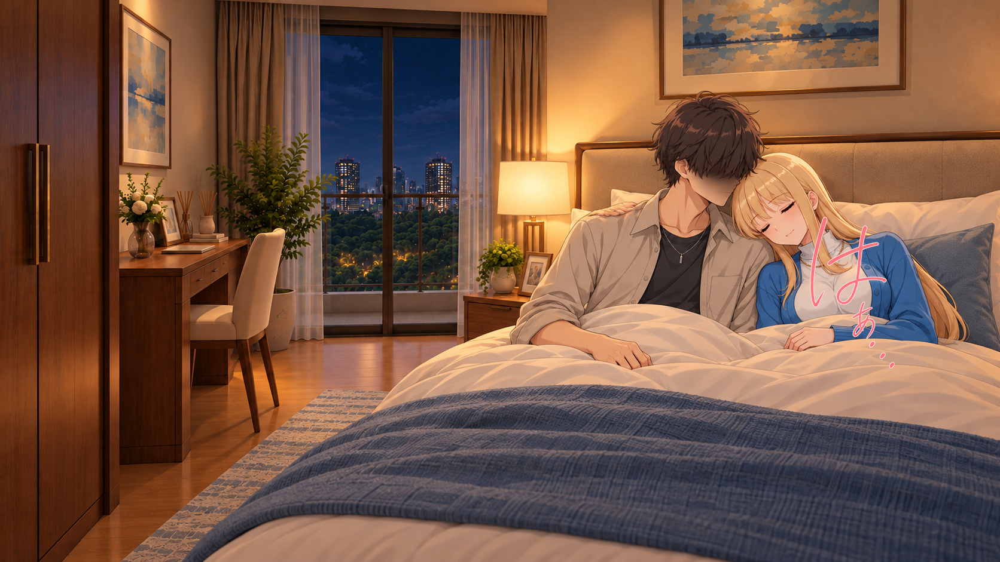
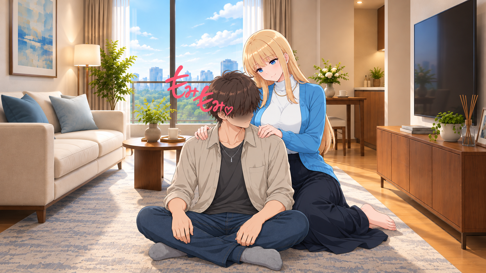
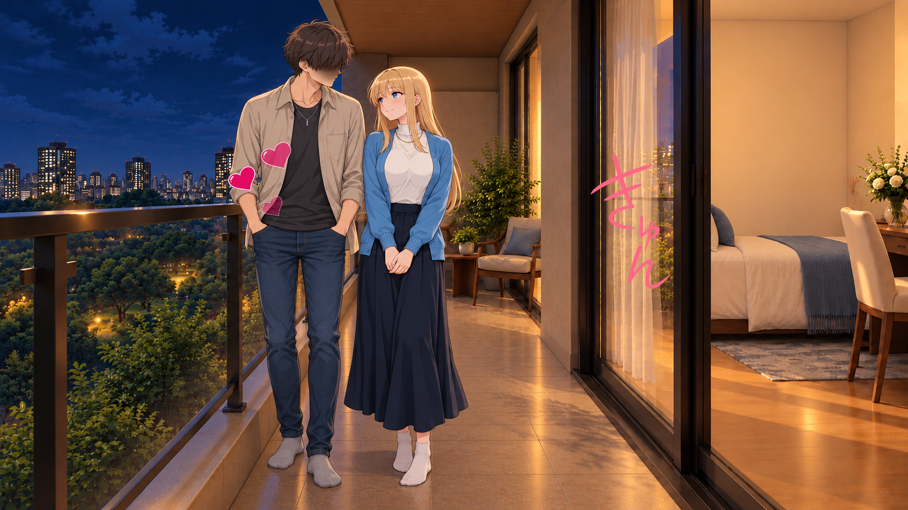
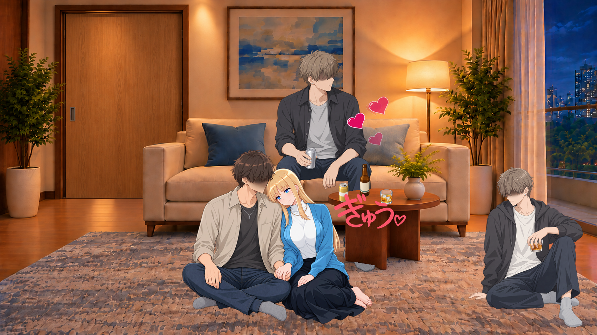
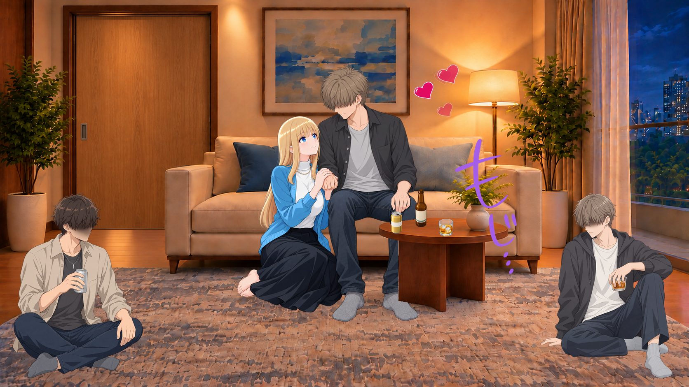
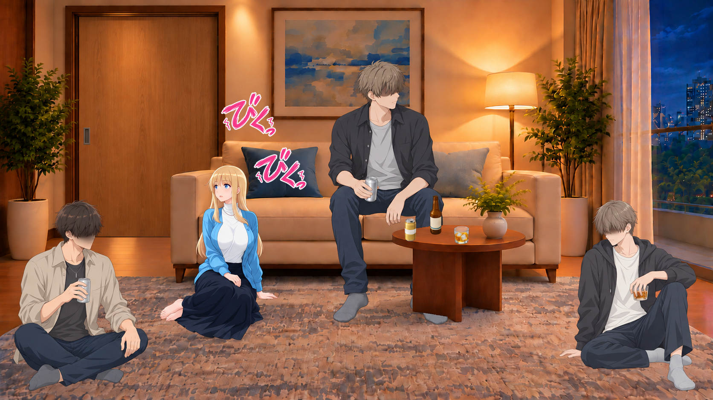
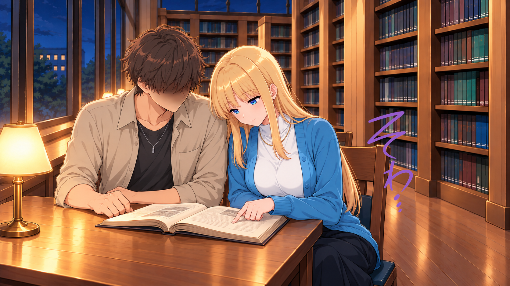
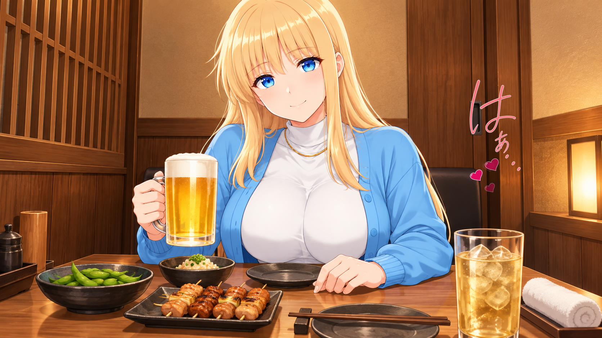
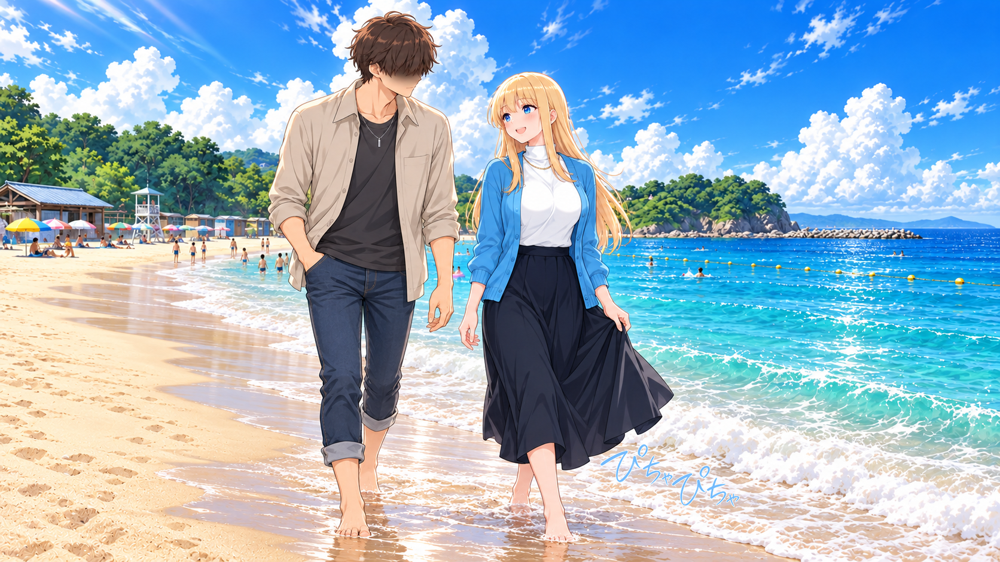

HOME · 新規生成CG
昼・枕にもたれて照れながら会話

PNG · GIF · WEBP · 文字・効果を重ねる前


表情：相手へ視線／薄い赤み／柔らかな眉／閉じた笑み
文字／効果：08_10_dokidoki ＋ ハート流出
枕にもたれる姿勢。完全な横臥版は12に別途用意。
人物・表情はベースCGに統合。描き文字とハート等は別素材を数値合成。どきどき使用の3場面はピンク・78%サイズ・小さな震え・重なる連続表示へ更新。改訂の比較
2026-10-23 · 自宅8場面＋図書館・居酒屋・ホテル前・海辺。新規の画像出力10件から9場面を選び、既存3場面と合わせて12場面にしました。
PNG · GIF · WEBP · 文字・効果を重ねる前
表情：相手へ視線／薄い赤み／柔らかな眉／閉じた笑み
文字／効果：08_10_dokidoki ＋ ハート流出
枕にもたれる姿勢。完全な横臥版は12に別途用意。
人物・表情はベースCGに統合。描き文字とハート等は別素材を数値合成。
表情：閉じた目／弱い赤み／脱力した眉／閉じ口
文字／効果：09_09_sigh
静かな休息。足元は布団内で画角外。靴なしを指定。
人物・表情はベースCGに統合。描き文字とハート等は別素材を数値合成。
PNG · GIF · WEBP · 文字・効果を重ねる前
表情：肩へ視線／控えめな赤み／集中した眉／小さな笑み
文字／効果：09_08_shoulder
手は衣服の上から左右の肩へ。肩もみ用文字を組み合わせる。
人物・表情はベースCGに統合。描き文字とハート等は別素材を数値合成。
表情：相手へ視線／薄い赤み／柔らかな眉／閉じた笑み
文字／効果：08_11_kyun ＋ ハート流出
寝室とつながる自宅ベランダ。二人とも靴下。
人物・表情はベースCGに統合。描き文字とハート等は別素材を数値合成。
PNG · GIF · WEBP · 文字・効果を重ねる前
表情：相手側へ顔を傾ける／薄い赤み／穏やかな眉／笑み
文字／効果：09_02_gyuu ＋ ハート流出
既存の床同士のペアと同席男子を再利用。男子3人とヒロイン1人。
人物・表情はベースCGに統合。描き文字とハート等は別素材を数値合成。
表情：ソファ側の相手へ視線／照れ／柔らかな眉／小さな笑み
文字／効果：08_12_moji ＋ ハート流出
支持面が違う接触。静止場面であり、歩いて近づく人物動画ではない。
人物・表情はベースCGに統合。描き文字とハート等は別素材を数値合成。
PNG · GIF · WEBP · 文字・効果を重ねる前
表情：ドア側へ視線／強い赤みなし／上げ眉／小さな開き口
文字／効果：びくっ びくっ
男性3人の同席を維持した顔編集。ピンクの2語の時間差フェード。
人物・表情はベースCGに統合。描き文字とハート等は別素材を数値合成。
PNG · GIF · WEBP · 文字・効果を重ねる前
表情：相手へ視線／薄い赤み／穏やかな眉／閉じた笑み
文字／効果：08_10_dokidoki ＋ ハート流出
横臥が分かる俯瞰案。男子の目元を髪で隠す修正済み候補。ベッド幅は背景から付随変化。
人物・表情はベースCGに統合。描き文字とハート等は別素材を数値合成。
表情：本へ伏せた視線／強い赤みなし／集中した眉／閉じ口
文字／効果：08_13_sowa
同じ本を近くで見る落ち着かない気持ちを小さい文字で添える。
人物・表情はベースCGに統合。描き文字とハート等は別素材を数値合成。
表情：相手（カメラ側）へ視線／薄い赤み／穏やかな眉／閉じた笑み
文字／効果：09_09_sigh ＋ ハート流出
既存の机上CGを再利用。主人公は画面外で、足元も画角外。
人物・表情はベースCGに統合。描き文字とハート等は別素材を数値合成。
PNG · GIF · WEBP · 文字・効果を重ねる前
表情：相手へ視線／薄い赤み／柔らかな眉／閉じた笑み
文字／効果：08_10_dokidoki ＋ ハート流出
屋外の待ち合わせ。室内ではないため通常の靴。
人物・表情はベースCGに統合。描き文字とハート等は別素材を数値合成。
PNG · GIF · WEBP · 文字・効果を重ねる前
表情：相手へ視線／薄い赤み／明るい眉／開いた笑顔
文字／効果：09_07_drips
二人とも砂浜で素足。水際の足音としてぴちゃぴちゃを添える。
人物・表情はベースCGに統合。描き文字とハート等は別素材を数値合成。